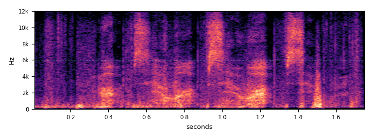
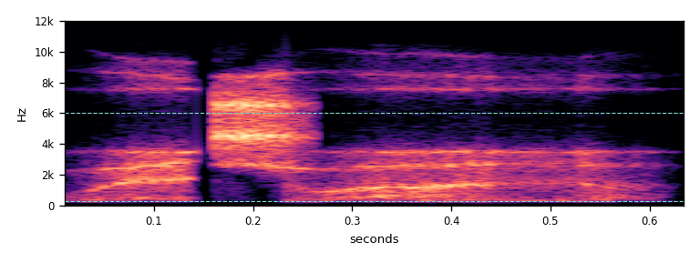
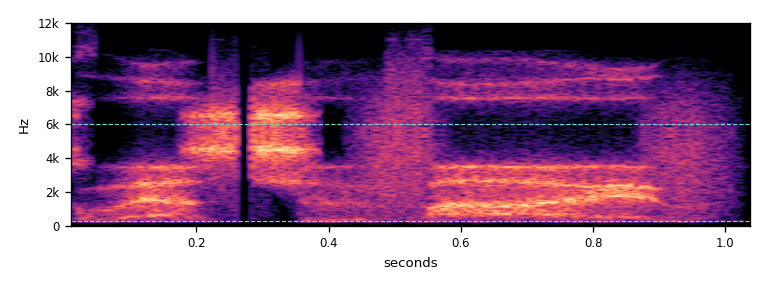
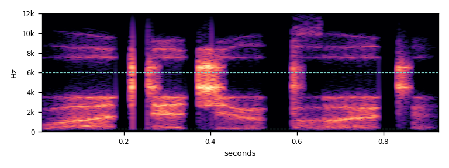

The placeholder
Rendered exactly as RoomSoundPresenter builds it: 0.55 s of white noise with a light smoothing filter and a fade. Played at its in-game level.

Syllables in a new order
Each recording is split into single syllables (bursts of 70–400 ms, cut at the dips in loudness). Any burst with a pitch is left out. New phrases are built from 4–5 bursts of one voice, with gaps of 40–90 ms. Two bursts that were neighbours in the recording are never placed next to each other, so no word can survive. The recording's own background sound fills the gaps, so it never drops to digital silence.


Played backwards
Played backwards, every syllable would swell up and stop dead, which is the usual "reverse" effect. To avoid that, each clip keeps the forward loudness shape: the waveform runs backwards, but every burst still starts sharply and fades away. The correction is capped at ±12 dB. Then the edges are trimmed and the clip gets fresh fades.



How it would sound in the room
The game plays the whisper as a 3D one-shot (linear roll-off, 1 to 24 m) at the effects volume. These two use a whisperer 4 m away. That means the game's distance drop (×0.87), a soft cut above 6.5 kHz for distance, and a small hard-walled room tail (0.5 s, 13 dB under the voice). The game has no reverb today. The tail is a suggestion and could be baked into the clips. Today the sound plays from the centre of the sector, 1 m above the floor. When it is integrated, it will play from the student who is whispering.
Exam phrases
The other way to deal with words is to make them fit the exam. The three phrases below are synthetic: macOS's built-in Whisper voice (say -v Whisper), prepared the same way. They are cleanly unpitched but sound like a machine, and they are brighter than a real whisper, with 13–24% of their energy above 6 kHz. Only "hey" is a real recording. Apple's terms for shipping macOS voice output in a game are unclear, so check them before using these.




The numbers
A real whisper has four signs. Its energy sits mostly in the speech band (0.3–6 kHz). It has no pitch, because the vocal cords do not vibrate. Its loudness rises and falls in syllables, about 3–6 per second. It lasts about as long as a phrase. "Pitched" is the share of frames with a clear pitch period: a normal spoken sentence scores 65%, the same sentence whispered 4%, and noise 0%. Green values pass, red values fail.
| Clip | Length s | LUFS | Peak dBFS | Centre Hz | <300 Hz | 0.3–6 kHz | >6 kHz | Pitched | Syllables | Syll/s |
|---|---|---|---|---|---|---|---|---|---|---|
| Placeholder | 0.55 | −28.3 | −21.2 | 8644 | 3% | 40% | 58% | 0% | 0 | 0.0 |
| Shuffled 1 | 0.92 | −26.0 | −10.4 | 1671 | 12% | 86% | 2% | 9% | 4 | 6.2 |
| Shuffled 2 | 1.08 | −26.0 | −11.0 | 1616 | 2% | 97% | 0% | 8% | 4 | 5.2 |
| Shuffled 3 | 1.15 | −26.0 | −7.7 | 1755 | 3% | 96% | 1% | 5% | 5 | 6.2 |
| Shuffled 4 | 1.21 | −26.0 | −7.2 | 1847 | 20% | 68% | 12% | 2% | 5 | 6.2 |
| Reversed A | 1.10 | −26.0 | −7.7 | 1560 | 2% | 98% | 1% | 0% | 4 | 6.2 |
| Reversed B | 1.39 | −26.0 | −8.5 | 1116 | 1% | 98% | 1% | 9% | 5 | 5.3 |
| Reversed C | 1.12 | −26.0 | −6.3 | 1180 | 2% | 98% | 0% | 3% | 3 | 4.3 |
| Reversed D | 1.76 | −26.0 | −8.3 | 1778 | 17% | 75% | 9% | 4% | 9 | 5.9 |
| Real "hey" | 0.35 | −26.0 | −10.3 | 1456 | 0% | 100% | 0% | 7% | 1 | 3.3 |
| Synth "which one?" | 0.65 | −26.0 | −9.3 | 3938 | 0% | 77% | 23% | 4% | 2 | 3.6 |
| Synth "question five?" | 1.05 | −26.0 | −11.6 | 3056 | 0% | 87% | 13% | 2% | 3 | 3.2 |
| Synth "what did you put?" | 0.94 | −26.0 | −7.0 | 4196 | 0% | 76% | 24% | 0% | 5 | 7.7 |
| Original A (words) | 1.16 | −26.0 | −3.2 | 1634 | 2% | 98% | 0% | 0% | 3 | 5.1 |
The reworked clips keep the measurements of the originals: no pitch, speech-band energy, and syllables at 4–6 per second. Only the order of the sounds has changed. A clip running faster than 6 a second has been flagged as quick rather than wrong.
Why no words should get through
These clips have not been checked by ear yet: they were measured, not listened to. Here is what the construction guarantees.
Shuffled
- Each piece is a single burst of at most 400 ms. Longer bursts, which could hold a whole word like "midnight", were left out.
- No two pieces next to each other came from next to each other in the recording. In voice 1 they are at least 3 bursts apart; in voice 2, which has only 8 bursts, at least 2.
- So no sequence of two original syllables survives. A single syllable can still be heard on its own.
Reversed
- Every sound, and the order of the sounds, runs backwards. Only the loudness shape runs forwards.
- Backward speech is a standard way to make speech that cannot be understood but still sounds like speech.
Not used
- 377743 "indistinctwhispering" (BlueSiren): 76% pitched. It is murmured speech, not a whisper.
- 446580 "Whispers" (Nicolas4677): 69% pitched, and recorded very quietly (peak −48 dBFS).
- 540060 "Whispering Man" (szegvari): one syllable a second over a steady hum. It sounds like a horror effect.
- 143902 "Four_Voices_Whispering" (geoneo0): four voices layered, with 39% of the energy above 6 kHz. A crowd, not two students.
Recommendation
- Ship Shuffled 1–4 and Reversed A–C as one pool of seven. Pick one at random each time, never the same one twice in a row. Add a small random pitch change (±4%). Shuffled 4 is a second voice, so the room is not one person.
- If the backwards ones sound odd to you, use only the four shuffled clips.
- Leave out Reversed D: at 1.76 s with nine bursts it is long and busy.
- Optional: add the real "hey" about 1 time in 5, as an exam-plausible opener. The synthetic phrases are here only for comparison. They sound like a machine, so I would not ship them.
- All clips are at −26 LUFS, about 2 dB above the placeholder. Play them from the whispering student, and consider baking in the small room tail.
- Please listen once more for any syllable that still sounds like a word. Any clip can be rebuilt with a different order.
Licence and edits
Every recording is CC0 1.0 (public domain), so it ships with no credit required. The credits here are a courtesy. The inputs were Freesound's public MP3 previews. Before shipping, swap in the original WAVs (a free login, same licence) and rerun the same steps. All clips: 220 Hz high-pass, 12 kHz low-pass, mono 44.1 kHz 16-bit, −26 LUFS (ITU BS.1770), single clicks held under −3 dBFS.
| Used in | Freesound file | Author | Material |
|---|---|---|---|
| Shuffled 1–3, Reversed A–C | 362503 Whispering Midnight.wav | balloonhead | 10 bursts; cuts 5.92–7.08, 1.90–3.42, 7.60–8.98 s |
| Shuffled 4, Reversed D | 620041 Whisper.wav | AlexMiller2000 | 8 bursts; cut 0.36–2.12 s |
| "hey" | 849127 Hey Whisper | qubodup | whole |
| Synthetic phrases | macOS say -v Whisper -r 190 | (generated) | 3 phrases |